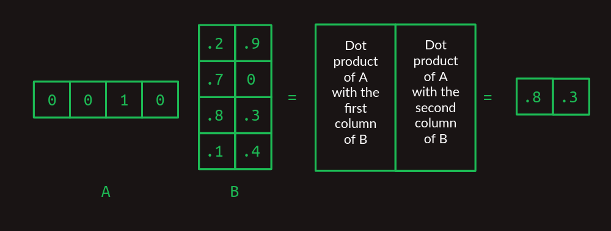

Este artículo fue escrito originalmente en inglés por Brandon Rohrer. Puede encontrar aquí el artículo original.
Pospuse una inmersión profunda en los transformadores durante unos años. Finalmente, la incomodidad de no saber qué los hace funcionar creció demasiado para mí. Aquí está esa inmersión.
Los transformadores se introdujeron en este artículo de 2017 como una herramienta para la transducción de secuencias, es decir, convertir una secuencia de símbolos en otra. Los ejemplos más populares de esto son la traducción, como de inglés a alemán. También se ha modificado para completar secuencias: dado un inicio, continuar en el mismo tono y estilo. Rápidamente se han convertido en una herramienta indispensable para la investigación y el desarrollo de productos en el procesamiento del lenguaje natural.
Antes de comenzar, un aviso. Vamos a hablar mucho sobre multiplicaciones de matrices y ligeramente sobre retropropagación (el algoritmo para entrenar el modelo), pero no necesitas saber nada de esto de antemano. Añadiremos los conceptos que necesitamos uno a uno, con su respectiva explicación.
No es un viaje corto, pero espero que te alegres de haber venido.
Codificación en-caliente (one-hot)
Al principio estaban las palabras. Tantas palabras. Nuestro primer paso es convertir todas las palabras en números para poder hacer cálculos con ellas.
Imagina que nuestro objetivo es crear la computadora que responde a nuestros comandos de voz. Es nuestro trabajo construir el transformador que convierte (o transduce) una secuencia de sonidos en una secuencia de palabras.
Comenzamos eligiendo nuestro vocabulario, la colección de símbolos con la que vamos a trabajar en cada secuencia. En nuestro caso, habrá dos conjuntos diferentes de símbolos, uno para la secuencia de entrada que representa los sonidos vocales y otro para la secuencia de salida que representa palabras.
Por ahora, asumamos que estamos trabajando con inglés. Hay decenas de miles de palabras en el idioma inglés, y quizás algunos miles más para cubrir la terminología específica de computadoras. Eso nos daría un tamaño de vocabulario que es casi cien mil. Una forma de convertir palabras en números es comenzar a contar desde uno y asignar a cada palabra su propio número. Luego, una secuencia de palabras puede representarse como una lista de números.
Por ejemplo, considera un lenguaje pequeño con un tamaño de vocabulario de tres palabras: files, find y my. Cada palabra podría intercambiarse por un número, quizás files = 1, find = 2 y my = 3. Entonces, la frase "Find my files", que consiste en la secuencia de palabras [find, my, files] podría representarse en su lugar como la secuencia de números [2, 3, 1].
Esta es una forma perfectamente válida de convertir símbolos en números, pero resulta que hay otro formato que es aún más fácil para las computadoras, la codificación en-caliente. En la codificación en-caliente, un símbolo se representa mediante una matriz de ceros en su mayoría, de la misma longitud que el vocabulario, con un solo elemento que tiene un valor de uno. Cada elemento de la matriz corresponde a un símbolo diferente.
Otra forma de pensar en la codificación en-caliente es que cada palabra todavía recibe su propio número, pero ahora ese número es un índice en una matriz. Aquí está nuestro ejemplo anterior, en notación en-caliente.

Así que la frase "Find my files" se convierte en una secuencia de matrices unidimensionales que, después de juntarlas, comienza a parecer una matriz bidimensional.

Aviso, usaré los términos "matriz unidimensional" y "vector" indistintamente. De igual manera con "matriz bidimensional" y "matriz".
Producto punto
Una cosa realmente útil sobre la representación en-caliente es que nos permite calcular productos punto. Estos también se conocen por otros nombres intimidantes como producto interior y producto escalar. Para obtener el producto punto de dos vectores, multiplica sus elementos correspondientes y luego suma los resultados.

Los productos punto son especialmente útiles cuando estamos trabajando con nuestras representaciones de palabras en-caliente. El producto punto de cualquier vector en-caliente consigo mismo es uno.

Y el producto punto de cualquier vector en-caliente con cualquier otro vector en-caliente es cero.

Los dos ejemplos anteriores muestran cómo los productos punto pueden usarse para medir la similitud. Como otro ejemplo, considera un vector de valores que representa una combinación de palabras con diferentes pesos. Una palabra codificada en-caliente puede compararse contra él con el producto punto para mostrar cuán fuertemente está representada esa palabra.
Multiplicación de matrices
El producto punto es el bloque de construcción de la multiplicación de matrices, una forma muy particular de combinar un par de matrices bidimensionales. Llamaremos a la primera de estas matrices A y a la segunda B. En el caso más simple, cuando A tiene solo una fila y B tiene solo una columna, el resultado de la multiplicación de matrices es el producto punto de los dos.

Observa cómo el número de columnas en A y el número de filas en B deben ser el mismo para que las dos matrices se alineen y el producto punto funcione.
Cuando A y B comienzan a crecer, la multiplicación de matrices se vuelve alucinante. Para manejar más de una fila en A, toma el producto punto de B con cada fila por separado. La respuesta tendrá tantas filas como tenga A.

Cuando B toma más columnas, toma el producto punto de cada columna con A y apila los resultados en columnas sucesivas.

Ahora podemos extender esto a la multiplicación de cualquier par de matrices, siempre y cuando el número de columnas en A sea el mismo que el número de filas en B. El resultado tendrá el mismo número de filas que A y el mismo número de columnas que B.

Si es la primera vez que ves esto, puede parecer innecesariamente complejo, pero te prometo que vale la pena más adelante.
Multiplicación de matrices como una consulta de tabla
Observa cómo la multiplicación de matrices actúa como una consulta de tabla aquí. Nuestra matriz A está compuesta de una pila de vectores one-hot. Tienen unos en la primera columna, la cuarta columna y la tercera columna, respectivamente. Cuando trabajamos a través de la multiplicación de matrices, esto sirve para extraer la primera fila, la cuarta fila y la tercera fila de la matriz B, en ese orden. Este truco de usar un vector one-hot para extraer una fila particular de una matriz es el núcleo de cómo funcionan los transformadores.
Modelo de secuencia de primer orden
Podemos dejar de lado las matrices por un minuto y volver a lo que realmente nos importa, las secuencias de palabras. Imagina que al comenzar a desarrollar nuestra interfaz de computadora de lenguaje natural queremos manejar solo tres comandos posibles:
- Muéstrame mis directorios por favor (Show me my directories please).
- Muéstrame mis archivos por favor (Show me my files please).
- Muéstrame mis fotos por favor(Show me my photos please).
Nuestro tamaño de vocabulario ahora es siete: {directorios, archivos, me, mis, fotos, por favor, muestra}({directories, files, me, my, photos, please, show}).
Una forma útil de representar secuencias es con un modelo de transición. Para cada palabra en el vocabulario, muestra cuál es la siguiente palabra probable. Si los usuarios preguntan sobre fotos la mitad del tiempo, archivos el 30% del tiempo y directorios el resto del tiempo, el modelo de transición se verá así. La suma de las transiciones desde cualquier palabra siempre sumará uno.

Este modelo de transición en particular se llama cadena de Markov, porque satisface la propiedad de Markov de que las probabilidades para la siguiente palabra dependen solo de las palabras recientes. Más específicamente, es un modelo de Markov de primer orden porque solo observa la única palabra más reciente. Si considerara las dos palabras más recientes, sería un modelo de Markov de segundo orden.
Nuestro descanso de las matrices ha terminado. Resulta que las cadenas de Markov se pueden expresar convenientemente en forma de matriz. Usando el mismo esquema de indexación que utilizamos al crear vectores en-caliente, cada fila representa una de las palabras en nuestro vocabulario. Lo mismo ocurre con cada columna. El modelo de transición de matriz trata una matriz como una tabla de consulta. Encuentra la fila que corresponde a la palabra que te interesa. El valor en cada columna muestra la probabilidad de que esa palabra venga después. Dado que el valor de cada elemento en la matriz representa una probabilidad, todos caerán entre cero y uno. Debido a que las probabilidades siempre suman uno, los valores en cada fila siempre sumarán uno.

En la matriz de transición aquí podemos ver claramente la estructura de nuestras tres frases. Casi todas las probabilidades de transición son cero o uno. Hay solo un lugar en la cadena de Markov donde ocurre una ramificación. Después de my, las palabras directorios, archivos o fotos podrían aparecer, cada una con una probabilidad diferente. Aparte de eso, no hay incertidumbre sobre qué palabra vendrá después. Esa certeza se refleja en la matriz de transición, que tiene principalmente unos y ceros.
Podemos volver a nuestro truco de usar la multiplicación de matrices con un vector en-caliente para extraer las probabilidades de transición asociadas con cualquier palabra dada. Por ejemplo, si solo queremos aislar las probabilidades de qué palabra viene después de my, podemos crear un vector en-caliente representando la palabra my y multiplicarlo por nuestra matriz de transición. Esto extrae la fila relevante y nos muestra la distribución de probabilidad de cuál será la siguiente palabra.

Modelo de secuencia de segundo orden
Predecir la siguiente palabra basándose solo en la palabra actual es difícil. Es como predecir el resto de una melodía después de recibir solo la primera nota. Nuestras posibilidades mejoran mucho si al menos podemos obtener dos notas para seguir.
Podemos ver cómo funciona esto en otro modelo de lenguaje de juguete para nuestros comandos de computadora. Esperamos que este solo vea dos frases, en una proporción de 40/60.
- Verifica si la batería se agotó por favor(Check whether the battery ran down please).
- Verifica si el programa se ejecutó por favor(Check whether the program ran please).
Una cadena de Markov ilustra un modelo de primer orden para esto.

Aquí podemos ver que si nuestro modelo observara las dos palabras más recientes, en lugar de solo una, podría hacerlo mejor. Cuando encuentra batería se agotó, sabe que la siguiente palabra será abajo, y cuando ve programa se ejecutó la siguiente palabra será por favor. Esto elimina una de las ramificaciones en el modelo, reduciendo la incertidumbre y aumentando la confianza. Mirar hacia atrás dos palabras convierte esto en un modelo de Markov de segundo orden. Da más contexto sobre el que basar las predicciones de la siguiente palabra. Las cadenas de Markov de segundo orden son más desafiantes de dibujar, pero aquí están las conexiones que demuestran su valor.

Para resaltar la diferencia entre los dos, aquí está la matriz de transición de primer orden,

y aquí está la matriz de transición de segundo orden.

Observa cómo la matriz de segundo orden tiene una fila separada para cada combinación de palabras (la mayoría de las cuales no se muestran aquí). Eso significa que si comenzamos con un tamaño de vocabulario de N, entonces la matriz de transición tiene N^2 filas.
Lo que esto nos da es más confianza. Hay más unos y menos fracciones en el modelo de segundo orden. Solo hay una fila con fracciones en ella, una ramificación en nuestro modelo. Intuitivamente, observar dos palabras en lugar de solo una proporciona más contexto, más información sobre la que basar una adivinanza de la siguiente palabra.
Modelo de secuencia de segundo orden con saltos
Un modelo de segundo orden funciona bien cuando solo tenemos que mirar hacia atrás dos palabras para decidir qué palabra viene a continuación. ¿Qué pasa cuando tenemos que mirar más atrás? Imagina que estamos construyendo otro modelo de lenguaje. Este solo tiene que representar dos frases, cada una igualmente probable.
- Verifica el registro del programa y averigua si se ejecutó por favor (Check the program log and find out whether it ran please).
- Verifica el registro de la batería y averigua si se agotó por favor (Check the battery log and find out whether it ran down please).
En este ejemplo, para determinar qué palabra debería venir después de se ejecutó, tendríamos que mirar hacia atrás 8 palabras en el pasado. Si queremos mejorar nuestro modelo de lenguaje de segundo orden, podemos considerar modelos de tercer orden y superiores. Sin embargo, con un tamaño de vocabulario significativo, esto requiere una combinación de creatividad y fuerza bruta para ejecutarlo. Una implementación ingenua de un modelo de octavo orden tendría N^8 filas, un número ridículo para cualquier vocabulario razonable.
En cambio, podemos hacer algo astuto y crear un modelo de segundo orden, pero considerar las combinaciones de la palabra más reciente con cada una de las palabras que vinieron antes. Sigue siendo de segundo orden, porque solo estamos considerando dos palabras a la vez, pero nos permite retroceder más y capturar dependencias a largo plazo. La diferencia entre este segundo orden con saltos y un modelo de orden superior completo es que descartamos la mayor parte de la información del orden de las palabras y las combinaciones de palabras anteriores. Lo que queda todavía es bastante poderoso.
Las cadenas de Markov nos fallan completamente ahora, pero aún podemos representar el enlace entre cada par de palabras anteriores y las palabras que siguen. Aquí hemos prescindido de pesos numéricos, y en su lugar estamos mostrando solo las flechas asociadas con pesos no cero. Los pesos mayores se muestran con líneas más gruesas.

Así es como podría verse en una matriz de transición.

Esta vista solo muestra las filas relevantes para predecir la palabra que viene después de se ejecutó. Muestra instancias donde la palabra más reciente (se ejecutó) está precedida por cada una de las otras palabras en el vocabulario. Solo se muestran los valores relevantes. Todas las celdas vacías son ceros.
Lo primero que se hace evidente es que, al tratar de predecir la palabra que viene después de se ejecutó, ya no miramos solo una línea, sino un conjunto entero de ellas. Hemos salido del ámbito de Markov ahora. Cada fila ya no representa el estado de la secuencia en un punto particular. En cambio, cada fila representa una de muchas características que pueden describir la secuencia en un punto particular. La combinación de la palabra más reciente con cada una de las palabras anteriores constituye una colección de filas aplicables, tal vez una gran colección. Debido a este cambio en el significado, cada valor en la matriz ya no representa una probabilidad, sino un voto. Los votos se sumarán y compararán para determinar las predicciones de la siguiente palabra.
Lo siguiente que se hace evidente es que la mayoría de las características no importan. La mayoría de las palabras aparecen en ambas frases, por lo que el hecho de que se hayan visto no ayuda en la predicción de qué viene a continuación. Todas tienen un valor de .5. Las únicas dos excepciones son batería y programa. Tienen algunos pesos de 1 y 0 asociados con los dos casos que estamos tratando de distinguir. La característica batería, se ejecutó indica que se ejecutó era la palabra más reciente y que batería ocurrió en algún lugar antes en la frase. Esta característica tiene un peso de 1 asociado con abajo y un peso de 0 asociado con por favor. De manera similar, la característica programa, se ejecutó tiene el conjunto opuesto de pesos. Esta estructura muestra que es la presencia de estas dos palabras antes en la frase lo que es decisivo para predecir qué palabra viene a continuación.
Para convertir este conjunto de características de pares de palabras en una estimación de la siguiente palabra, se deben sumar los valores de todas las filas relevantes. Sumando hacia abajo en la columna, la secuencia Verifica el registro del programa y averigua si se ejecutó genera sumas de 0 para todas las palabras, excepto un 4 para abajo y un 5 para por favor. La secuencia Verifica el registro de la batería y averigua si se agotó hace lo mismo, excepto con un 4 para por favor y un 5 para abajo. Al comparar los totales, podemos ver que las secuencias con batería en el pasado suelen terminar con abajo y las secuencias con programa en el pasado suelen terminar con por favor. Al elegir la palabra con el total de votos más alto como la predicción de la siguiente palabra, este modelo nos da la respuesta correcta, a pesar de tener una dependencia de ocho palabras de profundidad.
Enmascaramiento
Tras una consideración más cuidadosa, esto resulta insatisfactorio. La diferencia entre un total de votos de 4 y 5 es relativamente pequeña. Esto sugiere que el modelo no está tan seguro como podría estarlo. Y en un modelo de lenguaje más grande y orgánico, es fácil imaginar que una diferencia tan pequeña podría perderse en el ruido estadístico.
Podemos afinar la predicción eliminando todos los votos de características no informativas. Con la excepción de battery, ran y program, ran. Es útil recordar en este punto que sacamos las filas relevantes de la matriz de transición multiplicándola con un vector que muestra qué características están actualmente activas. Para este ejemplo hasta ahora, hemos estado utilizando el vector de características implícito que se muestra aquí.

Incluye un uno para cada característica que es una combinación de ran con cada una de las palabras que vienen antes de ella. Las palabras que vienen después no se incluyen en el conjunto de características. (En el problema de predicción de la siguiente palabra, estas aún no se han visto, por lo que no es justo usarlas para predecir qué viene después). Y esto no incluye todas las demás combinaciones posibles de palabras. Podemos ignorarlas de manera segura para este ejemplo porque todas serán cero.
Para mejorar nuestros resultados, podemos además forzar las características no útiles a cero creando una máscara. Es un vector lleno de unos excepto para las posiciones que deseas ocultar o enmascarar, y esas se establecen en cero. En nuestro caso, nos gustaría enmascarar todo excepto battery, ran y program, ran, las únicas dos características que han sido de alguna ayuda.

Para aplicar la máscara, multiplicamos los dos vectores elemento por elemento. Cualquier valor de actividad de característica en una posición no enmascarada se multiplicará por uno y se dejará sin cambios. Cualquier valor de actividad de característica en una posición enmascarada se multiplicará por cero y, por lo tanto, se forzará a cero.
La máscara tiene el efecto de ocultar gran parte de la matriz de transición. Oculta la combinación de ran con todo excepto battery y program, dejando solo las características que importan.

Después de enmascarar las características no útiles, las predicciones de la siguiente palabra se vuelven mucho más fuertes. Cuando la palabra battery ocurre antes en la oración, la palabra después de ran se predice como down con un peso de 1 y please con un peso de 0. Lo que era una diferencia de peso del 25 por ciento se ha convertido en una diferencia del infinito por ciento. No hay duda de qué palabra viene después. La misma predicción fuerte ocurre para please cuando program ocurre temprano.
Este proceso de enmascaramiento selectivo es la atención mencionada en el título del artículo original sobre transformers. Hasta ahora, lo que hemos descrito es solo una aproximación de cómo se implementa la atención en el artículo. Captura los conceptos importantes, pero los detalles son diferentes. Cerraremos esa brecha más adelante.
Parada y una salida
Felicitaciones por haber llegado hasta aquí. Puedes detenerte si quieres. El modelo de segunda orden selectiva con omisiones es una forma útil de pensar en lo que hacen los transformers, al menos en el lado del decodificador. Captura, a una primera aproximación, lo que hacen los modelos de lenguaje generativos como el GPT-3 de OpenAI. No cuenta la historia completa, pero representa el impulso central de ella.
Las siguientes secciones cubren más de la brecha entre esta explicación intuitiva y cómo se implementan los transformers. Estas se basan en tres consideraciones prácticas.
- Las computadoras son especialmente buenas en multiplicaciones de matrices. Existe toda una industria en torno a la construcción de hardware informático específicamente para multiplicaciones rápidas de matrices. Cualquier cálculo que pueda expresarse como una multiplicación de matrices puede hacerse sorprendentemente eficiente. Es un tren bala. Si puedes meter tu equipaje en él, te llevará a donde quieras ir muy rápido.
- Cada paso debe ser diferenciable. Hasta ahora solo hemos trabajado con ejemplos simplificados y hemos tenido el lujo de seleccionar manualmente todas las probabilidades de transición y valores de máscara: los parámetros del modelo. En la práctica, estos deben aprenderse mediante retropropagación, lo que depende de que cada paso de cálculo sea diferenciable. Esto significa que para cualquier cambio pequeño en un parámetro, podemos calcular el cambio correspondiente en el error del modelo o pérdida.
- El gradiente debe ser suave y bien condicionado. La combinación de todas las derivadas para todos los parámetros es el gradiente de la pérdida. En la práctica, hacer que la retropropagación se comporte bien requiere gradientes que sean suaves, es decir, que la pendiente no cambie muy rápidamente a medida que haces pequeños pasos en cualquier dirección. También se comportan mucho mejor cuando el gradiente está bien condicionado, es decir, no es radicalmente más grande en una dirección que en otra. Si imaginas una función de pérdida como un paisaje, el Gran Cañón sería uno mal condicionado. Dependiendo de si viajas por el fondo o por el costado, tendrás pendientes muy diferentes que recorrer. Por el contrario, las colinas onduladas del clásico salvapantallas de Windows tendrían un gradiente bien condicionado. Si la ciencia de arquitectar redes neuronales es crear bloques de construcción diferenciables, el arte de ellas es apilar las piezas de tal manera que el gradiente no cambie demasiado rápido y sea aproximadamente del mismo tamaño en cada dirección.